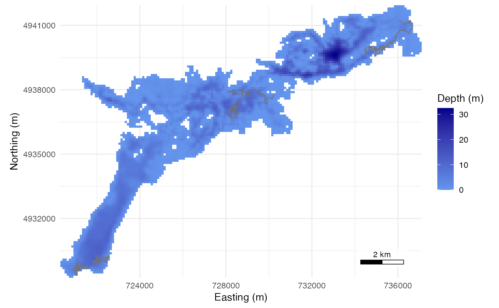

Simulate animal tracks on a water raster
simulate_tracks.RdWalks animals on a raster in which NA cells are land, with the step and
turn samplers of a movement_model(). A step that meets land is
reflected off the edge of the land cell, as light off a mirror, for the
rest of its length, so the animal follows the shore back into the water
and no part of the step crosses land. Reflection keeps the time spent in
each water cell in proportion to its area, near the shore as well as
offshore, for uniform and for persistent turns. A step holds its position
only when it needs more than max_reflections reflections, or when the
straight line from its start to its end would cross land; positions are
joined by straight lines downstream, so that line must be on water.
Usage
simulate_tracks(
grid,
model,
n_animals = 1,
n_steps = 100,
control = track_control(),
seed = NULL
)Arguments
- grid
A terra::SpatRaster in a projected CRS whose unit is the metre and whose scale at the raster centre, on its two axes and its diagonals, is within 1 percent of 1, as in
place_receivers(), with square cells, NA on land.- model
A
movement_model(), with or without a habitat preference fromhabitat_selection().- n_animals
Number of animals, each walked on its own track.
- n_steps
Steps per animal; each track has
n_steps + 1positions.- control
A
track_control()list: start, goal, clock, reflections.- seed
Seed for the simulation;
NULLuses the current random number stream. The caller's stream is restored after a seeded call. The draws depend on the generator kind as well as the seed, as withset.seed(); the kind is stored with the result.
Value
A data frame of class sim_tracks, one row per position, with
columns path_id (integer), step (0 to n_steps), time (POSIXct,
UTC), x, y, cell (the grid cell holding the position) and state
(1 moving, 2 resting; the state of the step that ends at the position).
Attributes: model, control, seed, rng_kind (the RNGkind() in
force), grid (the raster, packed with terra::wrap()), epsg,
arrived (step at which each animal reached the goal, NA if it did not)
and escapes, a data frame per animal counting the steps taken as drawn
(clear), reflected at the shore (reflected), held (held), and
without movement because the animal rested or had reached the goal
(still). The four counts of an animal sum to n_steps. A model from
habitat_selection() adds a column heading, the bearing in radians a
moving step started from before its turn (NA at step 0, at resting
steps and at steps held after 1,000 rejected candidates), and an
attribute selection, a data frame per animal counting the candidate
steps drawn (proposals), the steps accepted (accepted), candidates
longer than the reach (over_reach), candidates whose weight exceeded
the bound (above_bound) and steps held after 1,000 rejections
(exhausted, counted in held as well).
Details
Bearings are in radians, anticlockwise from east. The first bearing of a track is uniform; after a reflection the walk keeps the reflected bearing. With a two-state model the animal does not move while it rests, and keeps its bearing for when it moves again.
The function warns when more than 1 percent of moving steps held, when more than
half were reflected (often a step length in the wrong units, or a goal
pulling an animal against the shore), when more than 0.1 percent held after 1,000
rejected candidates under a habitat_selection() preference, or when a
goal was given and no animal reached it. With a goal, every start must be in
water that connects to the goal through cells that share an edge; the
function stops otherwise.
Examples
stoney <- terra::rast(system.file("extdata", "stoney_depth.tif",
package = "arraydesign"))
# Three animals for 6 hours. evaluate_array() walks its animals with this
# model unless `control$movement` says otherwise.
walk <- crw_model(30, 15, 40, time_step_s = 60)
tr <- simulate_tracks(stoney, walk, n_animals = 3, n_steps = 360, seed = 1)
tr
#> <sim_tracks> 3 animals, 1083 positions, time step 60 s
#> steps: 1080; as drawn 1065, reflected at the shore 15, held 0, still 0
#> path_id step time x y cell state
#> 1 1 0 2025-01-01 00:00:00 734954.0 4939591 4011 1
#> 2 1 1 2025-01-01 00:01:00 734967.0 4939600 4011 1
#> 3 1 2 2025-01-01 00:02:00 734999.2 4939604 4011 1
#> 4 1 3 2025-01-01 00:03:00 734969.3 4939629 4011 1
#> 5 1 4 2025-01-01 00:04:00 734935.9 4939611 4011 1
#> 6 1 5 2025-01-01 00:05:00 734924.3 4939578 4011 1
attr(tr, "escapes")
#> path_id clear reflected held still
#> 1 1 349 11 0 0
#> 2 2 356 4 0 0
#> 3 3 360 0 0 0
plot(tr)

# The same walk from the south-west arm, pulled towards a bay on the north
# shore for up to 15 hours; `arrived` gives the step of arrival.
to_bay <- track_control(start = data.frame(x = 721950, y = 4930450),
goal = data.frame(x = 725500,
y = 4938000), goal_bias = 0.2,
goal_tolerance = 300)
tr_bay <- simulate_tracks(stoney, walk, n_animals = 3, n_steps = 900,
control = to_bay,
seed = 1)
attr(tr_bay, "arrived")
#> [1] 714 560 895
plot(tr_bay)